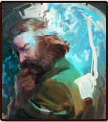
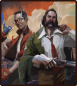
Disco Elysium - Guia de Conquistas
Este é um jogo bem complexo, com muitas possibilidades e alternativas
de comunicação, o que pode deixar os jogadores confusos em como
adquirir o quê. Se você busca o cem por cento, espero te ajudar de
alguma maneira com o guia. Disco Elysium possui alguns tipos exatos de
aquisição — as de ações exatas ou linhas de diálogo, variando também
para tipos de diálogo, que levam até certa solução dentro do jogo, que
ocasiona, portanto, no recebimento do achievement.
Conquistas de Diálogo
Algumas conquistas necessitam que os jogadores falem algumas coisas
específicas, alinhem-se a algum tipo de pensamento no espectro
político ou simplesmente abordem assuntos e tópicos que levem a um
resultado que, invariavelmente, os recompense com o achievement
desejado.
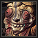
Trabalhador Foda do Gueto Neoliberal
— "Pregue sobre o livre mercado 9 vezes"
Envolve qualquer linha de diálogo que envolva o Detetive falando
sobre ou ganhando dinheiro. Preste atenção para não confundir as
linhas de diálogo pautadas no tocante do comunismo, já que essa é
outra conquista que pode ser adquirida dentro do jogo, como
abordado anteriormente. Classificado in-game como
"Ultraliberal".
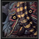
O Centrista Mais Risível do Mundo
— "Defenda o centrão 7 vezes"
Use linhas de diálogo que toquem no tema centrista. Evite qualquer
uma que aborde o comunismo ou o liberalismo econômico, por
exemplo, tendo em vista que vão levar para conquistas diferentes
dentro do jogo. In-game essas falas são etiquetadas como
"centristas", variando de acordo com a língua que você
usa.
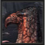
P**o Inacreditavelmente Entediante
— "Diga 7 coisas incrivelmente entediantes"
Essa aqui é mais abordada no caso das testemunhas, ao contrário
das outras linhas de diálogo que geralmente te levam até outros
personagens que não necessariamente estão conectados a
investigação. Não use nada relacionado ao "Policial do
Apocalipse", nem o "Policial Super-Estrela", nem o
"Sorriest Cop", que é o achievement que envolve pedir
desculpas, muitas vezes. Apenas selecione opções que abordem
coisas de policial comuns, perguntas envolvendo o caso, perguntas
envolvendo procedimentos da polícia etc.

Uma pérola de um porco!
— "Diga 5 frases do Tira Artístico"
Outra conquista bem direta em sua proposta. Se você se recorda da
explicação sobre a Conceitualização e o esquema de
"arte" dentro de Disco Elysium, você vai saber
exatamente quais opções selecionar dentro de cada diálogo. Seja
referenciando ou criticando arte, apenas foque em selecionar
opções desse tipo. Ao longo do jogo você vai encontrar uma
pichação de parede que fica atrás do pátio do Whirling in Rags,
onde o Cuno e a Cunoesse ficam, podendo conversar com o Kim sobre
isso e uma garota localizada no pátio à esquerda dessa
localização, numa das entradas do hotel.
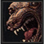
Oficial da Lei Hiper Estelar
— "Diga 7 frases como uma celebridade perturbada"
Outro tipo de linha de diálogo inconfundível. Evite as falas
relacionadas com o "Policial do Apocalipse" e o
"Policial Penitente" que você vai conseguir essa
conquista, evitando também as falas normais e entediantes da
conquista que eu já abordei aqui. Essa vai de afirmações musicais
até engrandecimento próprio do Detetive em sua megalomania. Com
sete dessas você consegue o achievement.
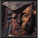
"Tradicionalista" Deveras Raivoso
— "Diga 10 coisas "tradicionalistas""
Seja fascista, racista, misógino e um fodido com outras pessoas.
Não tem muito segredo, apenas escolha opções que você
provavelmente nunca diria pra alguém na vida real que você
provavelmente vai receber o achievement. Entra nessa categoria
tudo que possa ser considerado uma fala extremamente filha da puta
com os outros. Você vai saber quais são.
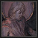
Literalmente o Tira Mais Penitente da Terra
— "Sinta muito por 10 (!!!) vezes"
Peça desculpas em todas as linhas de diálogo que autorizem essa
abordagem. Seja para o Garte ou para Sylvie, peça desculpa pelas
suas ações. Como o Detetive fez muita besteira durante suas horas
de inconsciência e bebedeira, você terá muitas oportunidades de
martirizar a si mesmo e implorar pelo perdão dos outros.
O Portador da Lei
— "Diga que você é a lei 7 vezes"
Mais fácil de se conseguir quando você está jogando com o
arquétipo do Sensitivo, tendo em vista que seu score de Autoridade
vai ser maior e, por isso, vão surgir mais oportunidades de
liberar linhas de diálogo relacionadas com essa abordagem. Eu sou
a Lei.
O Arauto do Oitavo Selo
— "Alerte-os 8 vezes sobre o fim iminente"
Liberada por padrão desde o início, basta evitar opções de pedir
desculpas, falar sobre coisas de policial convencional ou as
linhas de conversa que girem em torno do policial superstar. É um
tipo de conversa muito chamativo, fácil de se identificar, aborde
ela com todos os personagens possíveis até você acumular esse tipo
de fala oito vezes.
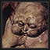
Maluco do Torque
— "Tagarele sobre maquinário 4 vezes"
Converse sobre caminhões, cargueiros, carros e as máquinas de
locomoção que existem no mundo do jogo. NORMALMENTE eu creio que
seja, sim, possível desbloquear essa conquista sem ter o
pensamento "Torque Dork" processado no seu
"Thought Cabinet", mas fica mais fácil com esse traço
no Detetive, apesar dos status serem um fator de consideração
para o jogador antes de só pegar.
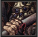
O Maior Edificador do Comunismo
— "Empregue a teoria crítica nove vezes"
A conquista é recebida quando o jogador, basicamente, escolhe
nove opções de diálogo que defendam ou girem em torno de um
alinhamento esquerdista. É possível que você receba essa
conquista na primeira jogada, sem sequer se dar conta de como
adquiriu o achievement, tendo em vista que algumas falas
do Detetive geralmente inclinam-se para esse lado.
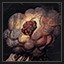
Especialista em Observação Remota Avançada
— "Veja através do véu 6 vezes"
Esse aqui é um pouquinho mais complicado. Pegue o arquétipo
Sensitivo, tendo em vista que os traços desse arquétipo vão ser
bem mais valiosos do que qualquer outro para a conquista desejada;
siga até a biblioteca e converse com a Annette. A ideia aqui é
você tocar no assunto paranormal, falando sobre aparições, visões
supranaturais e espíritos, qualquer coisa desse tipo vai servir.
Depois aborde o assunto da maldição e quaisquer detalhes úteis que
discorram nesse assunto.
Entre na loja, converse com a proprietária, interaja com as cortinas e siga falando sobre a maldição, eventualmente você vai conseguir um "job" como Void-Revenant, o que vai te permitir seguir até a Área Comercial Destruída — Doomed Commercial Area — enquanto conversa com o Kim e interage com o cenário. Fale com o seu parceiro e toque no assunto de você ter "visto além do véu", siga até o porão depois disso, tente invocar a Entidade na fornalha, siga até as escadas e suba até encontrar o artesão de dados, inquira excessivamente, aja como se estivesse suspeitando dela, acuse-a de ser uma entidade maligna e volte até a biblioteca para relatar suas descobertas.
Outras interações: a lixeira no pátio do Whirling in Rags, conversar com o Kim depois disso, perguntar se ele considera o caso um caso "misterioso" e, por fim, investigar o corpo, encarar seus olhos, perguntar se ele aproveitou o momento da morte.
Entre na loja, converse com a proprietária, interaja com as cortinas e siga falando sobre a maldição, eventualmente você vai conseguir um "job" como Void-Revenant, o que vai te permitir seguir até a Área Comercial Destruída — Doomed Commercial Area — enquanto conversa com o Kim e interage com o cenário. Fale com o seu parceiro e toque no assunto de você ter "visto além do véu", siga até o porão depois disso, tente invocar a Entidade na fornalha, siga até as escadas e suba até encontrar o artesão de dados, inquira excessivamente, aja como se estivesse suspeitando dela, acuse-a de ser uma entidade maligna e volte até a biblioteca para relatar suas descobertas.
Outras interações: a lixeira no pátio do Whirling in Rags, conversar com o Kim depois disso, perguntar se ele considera o caso um caso "misterioso" e, por fim, investigar o corpo, encarar seus olhos, perguntar se ele aproveitou o momento da morte.
Conquistas de Ação Específica
Ao contrário das conquistas de diálogo, essas giram em torno de
atitudes dentro do jogo que culminam especificamente na realização e
aquisição de um achievement específico. Algumas delas encerrarão o
jogo de imediato, outras te deixarão ir até o final do jogo, mas não
autorizarão a aquisição de conquistas alternativas no processo.
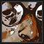
Recrute o Detetive Kim Kitsuragi
— "A nata do Distrito 57"
Tendo tratado o Kim bem ao longo do jogo, com uma reputação alta o
suficiente e um nível de amizade forte, se ele sobreviver ao
Tribunal Mercenário sem nenhum machucado, interaja com ele até que
você seja capaz de recrutá-lo para a Quadragésima Primeira
Delegacia (a do protagonista).
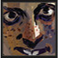
Recrute o Detetive Kuuno de Ruyter
— "Kuuno gives fucks to ya badge, faggot!"
O Kim precisa ter se machucado no Tribunal Mercenário, então você
vai poder recrutar o Cuno, finalizar o jogo e no trecho final,
convocar o Cuno oficialmente pro escritório de treinamento de
aprendizes. Boa sorte nessa aqui.
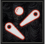
Bola-Gurdi é Foda
— "Ligue a sua máquina de pinball"
Acesse a passagem do Whirling in Rags no teto, depois encontre a
máquina no piso do chão, na oficina, interaja com ela, insira uma
moeda de 1 reál e jogue o jogo. Depois disso, a conquista será
desbloqueada.
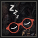
Azucrinando na Folga
— "Ele provavelmente não vai se importar"
Chame o seu parceiro depois que ele se recolher para dentro do
quarto no Whirling in Rags, pode ser em qualquer horário depois
das 21:00, precisamente no terceiro dia ou depois, sendo no quarto
ou no quinto.
Tempestade de Merda
— "A culpa é só sua"
No terceiro dia — ou depois dele — deixe o Kim para trás e siga
até o oeste do mapa, onde você vai encontrar a costa. Se aproxime
da árvore no meio do nada e, se você tiver +9 de Hand/Eye
Coordination, o orbe amarelo deve aparecer. O jogador precisa
jogar terra nas gaivotas três vezes pra ativar a cutscene
especial, e depois que você receber o presente dos animais alados,
o achievement vai ser liberado sem demais complicações.
Faça o Kim usar *A Jaqueta*
— "Você sabe qual"
Só é possível conseguir essa aqui depois de terminar a história no
Hardcore uma vez. Depois que você fizer isso, fale com o Kim após
começar outro jogo no Hardcore, e provavelmente vai ter liberado a
conquista sem demais problemas.
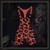
Mentalidade de Leopardo
— "*Esse é o tipo de animal que você quer ser"
Tendo +8 de Eletroquímica, basta seguir ao sul da Igreja no mapa
até chegar no rio. No chão, você vai achar essa roupa ridícula de
leopardo, que quando estiver no seu inventário, basta ser
equipada.
Sobrancelhas em Conflito
— "Force o Kim a revelar os segredos"
A disputa de "sobrancelhas" que tinha no primeiro jogo.
De acordo com informações, era impossível ganhar antes da
atualização Jamais Vu, mas agora é possível, contanto que o
jogador passe no check de Autoridade, por isso, é recomendável o
arquétipo de Sensitivo para a aquisição desse achievement. Clique
no seu parceiro e siga, abaixo a linha de diálogo:
VOCÊ - "Eu gostaria de falar sobre você."
VOCÊ - "Me conte um segredo sobre você."
VOCÊ - Perguntar outra vez.
VOCÊ - O que... está acontecendo... comigo?
Depois disso, o check de Autoridade acontece. Se você obtiver sucesso, você vai receber um prompt dentro da caixa de diálogo relatando o resultado.
VOCÊ - "Eu gostaria de falar sobre você."
VOCÊ - "Me conte um segredo sobre você."
VOCÊ - Perguntar outra vez.
VOCÊ - O que... está acontecendo... comigo?
Depois disso, o check de Autoridade acontece. Se você obtiver sucesso, você vai receber um prompt dentro da caixa de diálogo relatando o resultado.
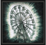
Um Círculo de Prazer e Luz
— "Reconstrua uma imagem do passado"
Você precisa ter um Cálculo Visual 8+, então o arquétipo do
Pensador é bom pra esse achievement. Depois de concluir a missão
do "Corpo Morto no Calçadão" e conversar com o Kim do
lado de fora, um orbe azul relacionado com a habilidade
supracitada vai aparecer. Clique nele e a requisição de ir até o
calçadão surgirá. Chegue na entrada da área, clique no orbe outra
vez e siga a linha de diálogo até que a roda gigante seja
reconstruída visualmente pelo Harry. Depois disso, conquista
liberada.
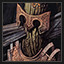
Fairweather T-500 Cobertura Vítrea
— "Equipe-se. Da cabeça aos pés."
Pegue, literalmente, TODAS as peças de armadura dentro do jogo.
Couraça Fairweather T-500 — essa fica com o Gary, o Criptofascista. Não confundir com o Morell, o Criptozoologista. Você tem que ter uma percepção passiva para perceber a couraça embaixo da roupa dele e, depois disso, compostura pra obrigar ele a confessar que roubou do corpo. Você só tem uma chance de pegar a armadura, já que se ele sair do Whirling, você perde a oportunidade para sempre.
Manoplas Fairweather T-500 — localizada no vilarejo de pesca. Você precisa conversar com a Cindy primeiro, depois falar com a Little Lily — ou Lily Carter — e encontrar as luvas atrás do castelo de areia localizado atrás da cabana dela.
Grevas Fairweather T-500 — essa fica no pátio do Whirling in Rags. Obviamente, fica com o corpo. Cuidado com essa aqui, tendo em vista que a conquista "Que Corpo?" não pode ser adquirida se você interagir com ele. É necessário um Interfacing alto e uma boa habilidade física para suportar o cheiro e, depois, conseguir puxar as botas.
Capacete Fairweather T-500 — Fortaleza Marítima. Depois de chegar lá, vá até o ninho do Phasmid, interaja com o primeiro contêiner que você enxergar e pronto, a última peça foi adquirida com sucesso.
Couraça Fairweather T-500 — essa fica com o Gary, o Criptofascista. Não confundir com o Morell, o Criptozoologista. Você tem que ter uma percepção passiva para perceber a couraça embaixo da roupa dele e, depois disso, compostura pra obrigar ele a confessar que roubou do corpo. Você só tem uma chance de pegar a armadura, já que se ele sair do Whirling, você perde a oportunidade para sempre.
Manoplas Fairweather T-500 — localizada no vilarejo de pesca. Você precisa conversar com a Cindy primeiro, depois falar com a Little Lily — ou Lily Carter — e encontrar as luvas atrás do castelo de areia localizado atrás da cabana dela.
Grevas Fairweather T-500 — essa fica no pátio do Whirling in Rags. Obviamente, fica com o corpo. Cuidado com essa aqui, tendo em vista que a conquista "Que Corpo?" não pode ser adquirida se você interagir com ele. É necessário um Interfacing alto e uma boa habilidade física para suportar o cheiro e, depois, conseguir puxar as botas.
Capacete Fairweather T-500 — Fortaleza Marítima. Depois de chegar lá, vá até o ninho do Phasmid, interaja com o primeiro contêiner que você enxergar e pronto, a última peça foi adquirida com sucesso.
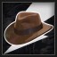
Modus: Mullen
— "Este é um filme que fica melhor em preto e branco"
Primeiro de tudo você precisa conseguir os dois itens principais:
o chapéu e a trenchcoat. O primeiro é adquirido depois de
convencer Plaisance a deixar a Annette entrar depois que você
desvenda algo sobre ela nos diálogos. Depois disso, você precisa
falar com a Annette — quando ela entrar na biblioteca — e então, o
chapéu estará disponível no seu inventário.
O casaco fica dentro da oficina de pinball no Whirling In Rags, onde você pode desbloquear a conquista do Bola-Gurdi é Foda, que eu já descrevi aqui no guia. O mesmo caminho usado pode ser o do telhado, mas se você já passou por lá, a cozinha também é uma opção. Depois de conseguir as duas vestimentas, o jogador precisa comprar o livro "Dick Mullen and the Mistaken Identity" na mesma biblioteca em que você vai passar várias vezes.
Depois de ler o livro, a opção de perguntar o final pra Annette e pra Plaisance vai ser liberada, selecione-a antes de sair da livraria e, enfim, clicar no orbe azul que vai aparecer. Equipe as duas roupas que você conseguiu anteriormente, clique no orbe de Cálculo Visual e leia o livro MAIS uma vez para liberar uma nova opção de diálogo. Depois disso você pode aproveitar o achievement liberado e um estilo novo de interface.
O casaco fica dentro da oficina de pinball no Whirling In Rags, onde você pode desbloquear a conquista do Bola-Gurdi é Foda, que eu já descrevi aqui no guia. O mesmo caminho usado pode ser o do telhado, mas se você já passou por lá, a cozinha também é uma opção. Depois de conseguir as duas vestimentas, o jogador precisa comprar o livro "Dick Mullen and the Mistaken Identity" na mesma biblioteca em que você vai passar várias vezes.
Depois de ler o livro, a opção de perguntar o final pra Annette e pra Plaisance vai ser liberada, selecione-a antes de sair da livraria e, enfim, clicar no orbe azul que vai aparecer. Equipe as duas roupas que você conseguiu anteriormente, clique no orbe de Cálculo Visual e leia o livro MAIS uma vez para liberar uma nova opção de diálogo. Depois disso você pode aproveitar o achievement liberado e um estilo novo de interface.
Conquistas de Reputação
Conquistas que envolvem pontos de honra ou certas interações com
certos personagens para conseguir resoluções z ou y. Duas envolvem,
principalmente, o Kim Kitsuragi, outra envolve sua reputação de honra
geral, que vai sendo moldada de acordo com as escolhas que você fizer
ao longo do jogo.
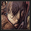
O Melhor Tira Bom
— "Ganhe a confiança do Kim"
Sem tirar nem pôr, seja legal com o Kim e trate ele bem em todas
as situações possíveis.
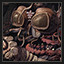
O Pior Tira Mau
— "Atinja o fundo do poço com Kim"
Ao contrário da primeira, seja o pior possível com o Kim. Ser
racista é uma boa maneira de conseguir esse achievement, e o
alinhamento fascista também te auxilia na tarefa. Pegando a caneca
ou falando com aquele trabalhador ao lado do estande de revistas
são bons começos.
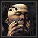
O Tira Mais Honroso Na Terra
— "Acumule 11 pontos de honra"
Essa exige uma lista inteira de ações possíveis para ser
completa, mas são necessários onze pontos para conquistar o
achievement. Além disso, aos cinco pontos de honra, você vai
liberar o pensamento "Overproductive Honour Glands",
que deve ser processado para a continuidade dessa conquista.
- Tente puxar o par de botas do cadáver no pátio, com o Kim presente, seja reprimido e então diga ao pensamento de Interfacing que seria desonroso roubá-las.
- Converse com a Joyce, aceite o dinheiro pra pagar a dívida e depois disso você pode tomar duas decisões: dizer que não seria honroso aceitar mais dinheiro, o que te recompensaria com um ponto de honra, e se declarar como um policial honrado que não pode ser desviado por uma doação, que te daria mais um ponto.
- Fale com o Call Me Mañana, peça dinheiro, mas não o pegue quando ele jogar na sua direção.
- Roube a identidade do trabalhador das docas no Whirling in Rags, devolvendo-o posteriormente ao Mañana.
- Depois de pedir dinheiro a Lena, devolva o broche comemorativo que ela te oferecer para penhorar, apesar de pagá-la posteriormente ser uma opção. A primeira opção te dá dois pontos, a segunda te dá um ponto.
- Convença o Evrart a requisitar a cooperação dos rapazes do Hardie no caso, depois disso, não aceite o dinheiro que ele te oferecer.
- Convença Plaisance a te ajudar a investigar a Área Comercial Destruída, depois prometa pela sua honra que você é capaz de lidar com o problema.
- Tenha uma bebida no seu inventário até o momento em que você descobrir suas mortes confirmadas, acesse a opção de tomar uma pelos que se foram, escolhendo a opção honrosa após isso.
- Faça o René Arnoux te oferecer a medalha, rejeitando-a ou aceitando-a e dando-a para o Os Porcos depois disso (associado com outra conquista dentro do jogo). Um jeito interessante de conseguir dois achievements de uma vez só.
- Fale com o René sobre seu passado, depois escolha a opção de respeitar a privacidade do soldado, o que te dá um ponto de honra.
- Fale com a Lena sobre a linha de telefone, depois fale com o Garte sobre isso; não revele suas fontes sobre o assunto, recebendo um ponto por isso.
- Ajude Rosemary a não vender a garrafa pelo preço indevido, o que também te concede um ponto de honra.
- Aceite a tarefa de achar a jaqueta do Doom Spiral's, conversando com a mulher na lavanderia e afirmando que é uma tarefa honrosa recuperar a peça de roupa.
Conquistas de Dificuldade
Conquistas relacionadas com o modo HARDMODE
Detetive de Verdade
— "Termine o jogo no modo HARDCORE"
Mantenha seus remédios guardados, tome muito cuidado com todas as
suas decisões, tente, tente muito. Não importa se você não conseguir
na primeira vez, só continue tentando, NÃO DESISTA. O modo Hardcore
pode parecer injusto ou pessimista mas, por vezes, você será capaz
de zerá-lo mesmo falhando nos checks vermelhos.
Aventure-se HARD no CORE
— "E boa viagem"
Conclua qualquer tarefa no Hardcore mode.
Conquistas Específicas
Mais conquistas específicas no guia.
Torta de Cobertura Sem Glúten
— "Na próxima você corta algumas calorias!"
No terceiro dia do jogo, ultrapasse a ponte e fale com o Gary, o
Criptofascista que está com a armadura Fairweather de outra
conquista. Passe pelo check de Autoridade, Conceitualização e
Compostura, intimide-o depois disso até chegar na linha de diálogo
em que o Harrier o questiona sobre a torta, passando pelo check de
Resistência e recebendo a torta ao retorno do Gary no Whirling in
Rags.
Quando ele estiver lá, interaja até conseguir a torta, depois disso abra o inventário, recolha a comida e coma a partir do inventário.
Quando ele estiver lá, interaja até conseguir a torta, depois disso abra o inventário, recolha a comida e coma a partir do inventário.
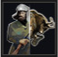
As Estatuetas Não A Trarão De Volta
— "Não servem para nada"
Compre a estatueta na loja de penhores, p rossiga no jogo até
chegar no sonho com a Dolores e, depois disso, tente entregar a
action figure pra ela. A conquista deve ser recebida depois disso,
só tome cuidado para não perder a oportunidade durante a
discussão.
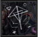
Andarilho do Pálido
Entre na Área Comercial Destruída com a lanterna,
posicionando-se aqui:
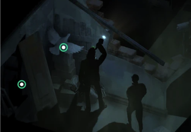
Desequipe a lanterna e salve o jogo. Dê load no save e espere o
Harry teleportar na escuridão. Como um ninja temível e bêbado.
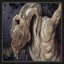
Que Corpo?
— "Resolva o caso sem nunca investigar o corpo."
A descrição diz tudo, você precisa fechar o caso sem investigar o
corpo. É possível falar com o Cuno, avaliar as pegadas na lama e a
lixeira, MAS NÃO CLIQUE NO CORPO. Não pegue as botas, não o tire
da árvore, não faça nada relacionado com o corpo. Depois disso, no
diálogo final do jogo, escolha o seguinte:
Mostre a arma para o Jean, até que ele diga que o Detetive está terrivelmente bêbado; diga que você parou de beber para sempre, ou minta caso tenha bebido ao longo do jogo, quando ele disser que não acredita e que você fede a cadáver, diga que você sequer chegou perto do corpo, e ainda assim concluiu o caso.
Mostre a arma para o Jean, até que ele diga que o Detetive está terrivelmente bêbado; diga que você parou de beber para sempre, ou minta caso tenha bebido ao longo do jogo, quando ele disser que não acredita e que você fede a cadáver, diga que você sequer chegou perto do corpo, e ainda assim concluiu o caso.
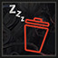
Polícia do Real
— "A noite do policial mendigo"
No dia dois ou qualquer dia depois desse, depois de pagar o Garte
pelos danos, você precisa ter o pensamento do Hobocop ou policial
pedinte internalizado, usando-o para, com as chaves da lixeira no
pátio, pedir por um quarto de graça ao gerente do Whirling in
Rags. Se você insistir o suficiente, ele dirá que você não precisa
pagá-lo: você precisa continuar o diálogo até ele finalmente
sugerir que você durma na lixeira, que é exatamente o que você
deve fazer.
Detalhe que, ao fazer isso, o jogo se encerra imediatamente.
Detalhe que, ao fazer isso, o jogo se encerra imediatamente.
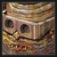
Distribuidor de Medalha
— "Aqui, pegue uma, é de graça."
Antes de qualquer coisa, é necessário conseguir a medalha do René
Arnoux dentro do jogo. Depois disso, meio caminho já foi andado
pra conseguir esse achievement. Prossiga na história até o Evrart
relatar quem pegou sua pistola, já que isso permanece um mistério
até que ele consiga finalmente dizer quem é. Através disso,
também, vem a missão de conseguir duas assinaturas.
Deixe o Kim no Whirling in Rags, ou seja, não acorde o seu parceiro e não o leve com você até lá; fale com Os Porcos no calçadão e passe no check de Autoridade, colocando a medalha na velhinha gentil e estranha.
Deixe o Kim no Whirling in Rags, ou seja, não acorde o seu parceiro e não o leve com você até lá; fale com Os Porcos no calçadão e passe no check de Autoridade, colocando a medalha na velhinha gentil e estranha.
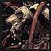
Inimigo do Reino Físico
— "Arrebente 5 objetos inanimados"
Vamos direto para a lista, já que é basicamente um grupo de
objetos que precisam ser agredidos para a aquisição da
conquista:
- Soque a porta da Klaasje no começo do jogo (a mulher que você encontra do lado de fora do seu quarto, fumando), precisa de Half Light +4
- Chute a caixa de correios perto do carro do Kim, mas isso precisa ser feito antes de você pegar o envelope branco com o Evrart
- Chute a caixa de correios perto do carro do Kim, agora depois que você pegar o envelope branco
- Chute a porta no galpão do Dançarino de Disco, depois do segundo dia
- Chute a fornalha no Distrito Abandonado
- Chute a lixeira depois de falhar em abri-la, isso pode ser forçado ao tentar sem a ferramenta necessária, vulgo prybar
Conquistas dos Grupos
Essas conquistas são complexas, exigem pré-requisitos e ações
específicas para culminar em um só resultado. Você só vai poder fazer
uma dessas por jogada, muitíssimo provavelmente, o que significa que
você precisa separar umas boas horas da sua semana para conseguir
conquistar todas elas, portanto, boa sorte em sua jornada.
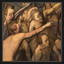
Heróis do Hardie
— "Uma dose para a social-democracia"
- Não imponha ponto de vista algum sobre o Titus Hardie ao longo da gameplay, isso é importante;
- Garanta que tanto o Titus quanto a Elizabeth Beaufort sobrevivam ao Tribunal Mercenário;
- Fale com o Titus depois disso, garantindo que você tenha ao menos mais de quatro pontos em Esprit de Corps, até que ele diz que possui algumas vagas e que você seria um bom "Hardie boy", com sua réplica sendo que o Titus em si seria um bom policial;
- Depois desse insight do Esprit de Corps, basta convidá-lo a se juntar ao RCM, o que vai liberar o achievement desejado.
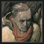
Inframaterialista Confesso
Pré-requisitos:
Tarefas:
- Selecione linhas de diálogo pautadas no comunismo, Retórica e Lógica alta, por favor
- Processe o pensamento comunista do Socio-Econômico Mazoviano, que não precisa estar completo. Sonhe com isso na terceira noite e feito, basta escolher a linha relacionada após isso
- Você precisa falar com o Mañana, Cindy the SKULL e o estudante comunista do hotel depois do Whirling in Rags, no quarto onze
Tarefas:
- Comece indo atrás dos comunistas do jogo, o Mañana e a Cindy são exemplos
- Escute a senha que o Call me Mañana vai dizer após algumas linhas de diálogo
- Seu próximo objetivo é comparecer na reunião comunista que vai rolar nos apartamentos depois da localização da Cindy, através daquela grade de ferro anteriormente inacessível, passe pelas escadas ao oeste e use a senha no diálogo que virá na sequência, falando sobre o suposto "clube do livro"
- Converse até que o check de Compostura seja ultrapassado e completado, seu sucesso definirá o restante da interação
- Leia o "A Brief Look at Infra-Materialism", mas não é necessário lê-lo por completo, só reconstrua a torre de caixas de fósforo
- Volte na noite seguinte para o lugar relatado, fale com o Steban sobre o que você aprendeu no livro e salve o jogo antes disso, passe pelo red check de Retórica até que ele fale sobre o poema que te dará o achievement
- Depois disso é acumular as trinta linhas de diálogo com tendências comunistas, ter um Interfacing alto o suficiente e reconstruir a torre de caixas de fósforo até o fim, o que fechará, em toda a sua completude, a tarefa, mas antes disso e provavelmente, a conquista já será sua.
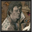
Indivíduo do Patrimônio Líquido
— "Todos os dias, você rala..."
Pré-requisitos:
Tarefas:
- Selecione o máximo de linhas de diálogo ultraliberais possíveis, exatamente aquelas que pregam sobre a economia e que tendem a abordar a riqueza do Detetive;
- Processe o pensamento "Modos Indiretos de Taxação" antes da terceira noite. Não precisar estar concluído, detalhe;
- Durante o sonho na terceira noite, escolha a opção "I’m just looking out for my economic self-interest ... [Pursue thought.]";
- Converse com os seguintes personagens: Cindy THE SKULL, Mega Rich Light-Bending Guy e o Doom Spiral
Tarefas:
- Peça um trabalho de arte pra Cindy, dialogue até você passar pelo check de Sugestão e comprar algo dela
- Coloque o contêiner no porto e abra ele com um check de Retórica
- Fale com o Diodore, vulgo Mega Rich, e consiga as ações.
- Converse com o Doom Spiral depois disso, contrate ele como o seu agente de marca
- Vá até o monumento do cavalo no engarrafamento
- Fale com o Doom Spiral de novo e, depois disso, continue jogando até passar do Tribunal Mercenário
- Volte até o Monumento e adquira a conquista
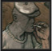
O Quebra-Gelo
- Depois de dizer ao menos quatro linhas de diálogo fascistas, você recebera uma orbe de pensamento relacionada a reconstruir o movimento fascista
- Processe o pensamento e vá dormir na noite três, onde você terá a oportunidade de perseguir esse pensamento
- Outro orbe de pensamento aparecerá, depois disso, basta você aceitar a tarefa relacionada
- Fale com o Gary, o Criptofascista (não se esqueça de ajudar o Morell), o motorista racista, o Measurehead e o René sobre "voltar no tempo"
- Passe o check de Sugestão com o Measurehead e siga ele até o escritório da mãe dele
- Vá até o quarto do Harry no Whirling in Rags, salve o jogo e faça o red check até você conseguir passar
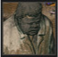
Comitê de la Responsabilité
Pré-requisitos:
Tarefas:
- O Kim precisa gostar de você, já deve ter conversado com o Charles Villedrouin (Sunday Friend), aberto o caminhão da Ruby, precisa ter pontos o suficiente em Lógica, ter completado a quest do buraco de dois milímetros na Igreja, passar o teste de Lógica da Soona para a parte teórica, o Jamais Vu e conhecimento do Pálido, que você consegue falando com a Joyce.
- Você seguir o alinhamento moralista/centrista ao longo do jogo pra conseguir a quest do pensamento político que vem no 4 dia +-
- Processe o pensamento, que nem no achievement acima, pra quando você dormir no terceiro dia, ter a opção de perseguir esse pensamento ao acordar
- Se quiser concluir essa conquista junto com a do policial entediante, basta escolher opções neutras e centristas
Tarefas:
- Questione o Kim sobre a tal da "Responsabilité"
- O Smoker on the Balcony, aquele sujeito que você conversa quando chega no hotel pela parte de trás e que eventualmente corre para longe, vai para o Whirling in Rags com o tempo, fale com ele e pergunte sobre o Sunday Friend
- Fale com o Sunday Friend na costa, ele se localiza no sudoeste, sul dos criptozoologistas e ao oeste dos homens bêbados, encontre seu jeito de acessar a parte mais à esquerda da instalação e fale com ele
- Ele vai falar sobre você contactar alguém sobre a aeronave, e que essa pessoa precisa ter o conhecimento técnico para lidar com isso — algo sobre vigiar todos de cima
- Volte para a localização da Soona e fale com ela, a opção do diálogo deve aparecer naturalmente
- Compre o transceiver na loja de penhores, o preço é um pouco alto, mas valerá a pena se você pretende conseguir esse final
- Volte para a Soona e contate a aeronave, recomendo que você salve o jogo antes de tentar, já que isso dá dano na Moral e na Vida
- Para conseguir o achievement, basta relatar a situação do buraco de dois milímetros, assim o jogo terminará de maneira alternativa